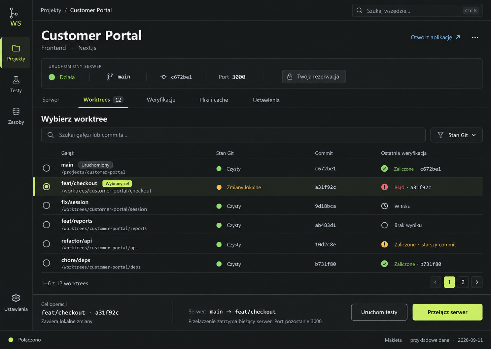

Jedno miejsce dla wzorców.
Oryginalna makieta wyznacza kierunek. Próbki poniżej pomagają go sprawdzać i rozwijać, ale pozostają robocze. Ten katalog nie steruje aplikacją.
{kind=link}
Pokaż oryginalną makietę

Kolory i typografia
Antracyt, czytelny tekst i oszczędna limonka. Konkretne wartości tokenów są propozycją do oceny, nie nową zatwierdzoną paletą.
#181A18#202320#C5E76C#ECEFE6Customer Portal
Tekst interfejsu pozostaje czytelny również w gęstej tabeli.
feat/checkout · a31f92c
Identyfikatory, gałęzie i ścieżki korzystają z fontu monospace. Zwykły tekst ma font systemowy, dostępny bez sieci.
Kontrolki i stany
Próbki wizualne do późniejszego odwzorowania w komponentach shadcn. Przyciski poniżej jedynie pokazują komunikat demonstracyjny.
To tylko przykłady. Żadna operacja nie zostanie wykonana.
Przejdź klawiszem Tab, aby sprawdzić obramowanie fokusu.
Zaliczone testy dla c672be1 nie potwierdzają poprawności aktualnego a31f92c.
Czytelność przy 30 i 300 projektach
Sprawdź wyszukiwanie, filtry, wybór wiersza i gęstość. To demonstracja listy w przeglądarce, nie test wydajności kontrolera.
| Wybór | Projekt | Serwer | Uruchomiona gałąź | Rezerwacja | Ostatnia weryfikacja |
|---|
Zmień zapytanie lub wyczyść filtry.
Nie wybrano projektu.